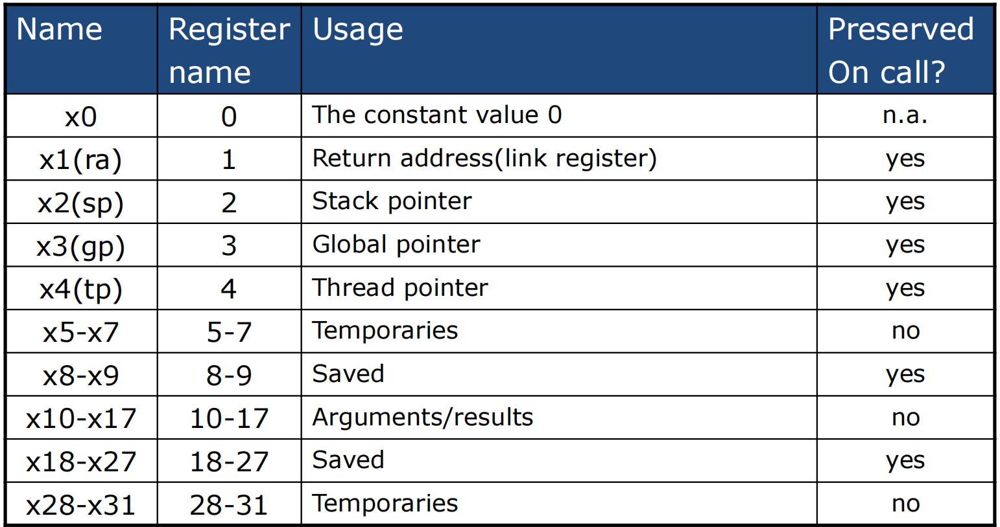
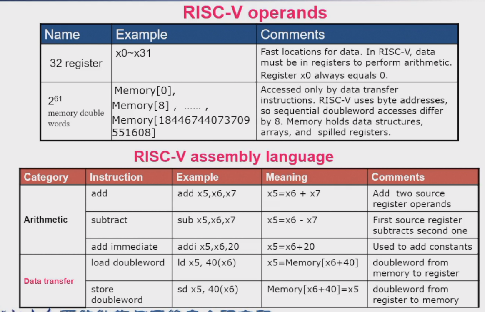
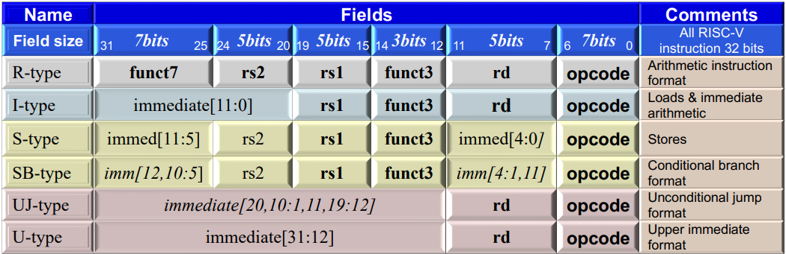

第2章 Risc-V ISA¶
operation¶
arithmetic指令的规则和统一形式¶
- 每条指令只能执行1个操作，如add、and、数据存取等
- Exactly three variables 如
add a,b,c, a←b+c
operand¶
Risc-V的arithmetic指令的操作数必须是register
Register, Word (4 Bytes)¶
Risc-V Registers
| Name | Register Name | Usage | Preserved or call? |
|---|---|---|---|
| x0 (zero) | 0 | The constant value 0 | n.a. |
| x1 (ra) | 1 | Return address(link register) | yes |
| x2 (sp) | 2 | Stack pointer | yes |
| x3 (gp) | 3 | Global pointer | yes |
| x4 (tp) | 4 | Thread pointer | yes |
| x5-x7 (t0-t2) | 5-7 | Temporaries | no |
| x8 (s0/fp) | 8 | Saved/frame pointer | yes |
| x9 (s1) | 9 | Saved | yes |
| x10-x17 (a0-a7) | 10-17 | Arguments/results | no |
| x18-x27 (s2-s11) | 18-27 | Saved | yes |
| x28-x31 (t3-t6) | 28-31 | Temporaries | no |
| PC | - | Add Upper Immediate to PC | yes |

根据教材的硬件设施，有32个64bit的register，memory中的数据以1个doubleword (8Byte = 64bit) 为一个访问单位，每一次访问memory都是访问一个doubleword块，因此访问起始地址为 0, 8, 16, 24...以此类推
memory operands¶
- 主存(main memory)用于存放复杂数据结构 如Arrays, structures, dynamic data
- 进行算术运算通过
- Load values from memory into registers
- Store result from register to memory
- Memory is byte addressed Each address identifies an 8-bit byte
- RISC-V is Little Endian
- 小端法：Least-significant byte at least address of a word
- 大端法: most-significant byte at least address
- RISC-V does not require words to be aligned in memory words align: 一个字是 4 字节，我们要求字的起始地址一定要是 4 的倍数。
Registers vs. Memory¶
- Registers are faster to access than memory
- Operating on memory data requires loads and stores
- Compiler must use registers for variables as much as possible 编译器尽量使用寄存器存变量。只有在寄存器不够用时，才会把不太用的值放回内存。
Risc-V ISA

memory operand example
Instruction set¶

procedure calling（函数调用）¶
- sp (stack pointer) : 指向当前的栈顶，在当前进程中不断变化
- fp (frame pointer) : 指向当前进程的栈底